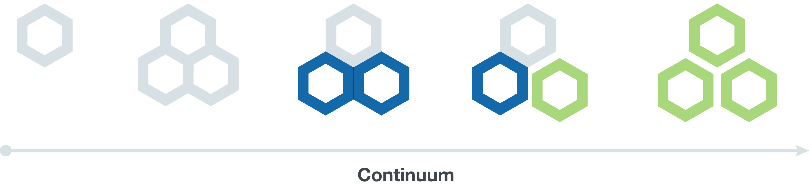
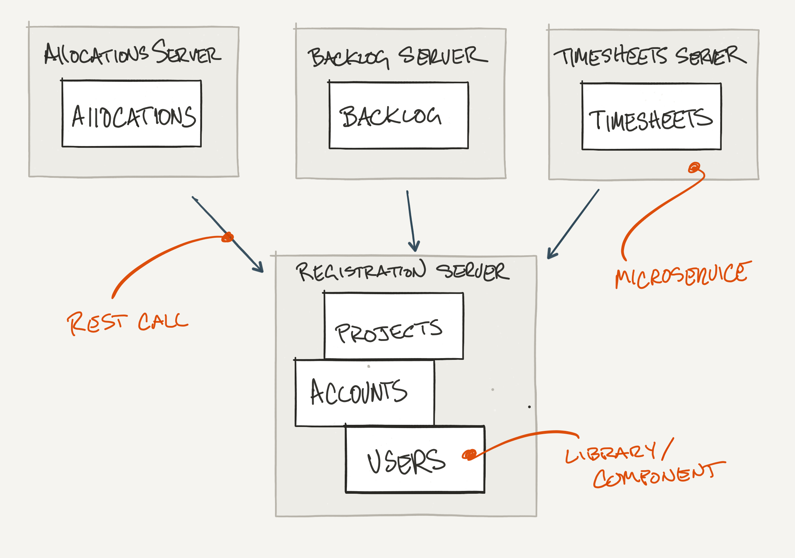
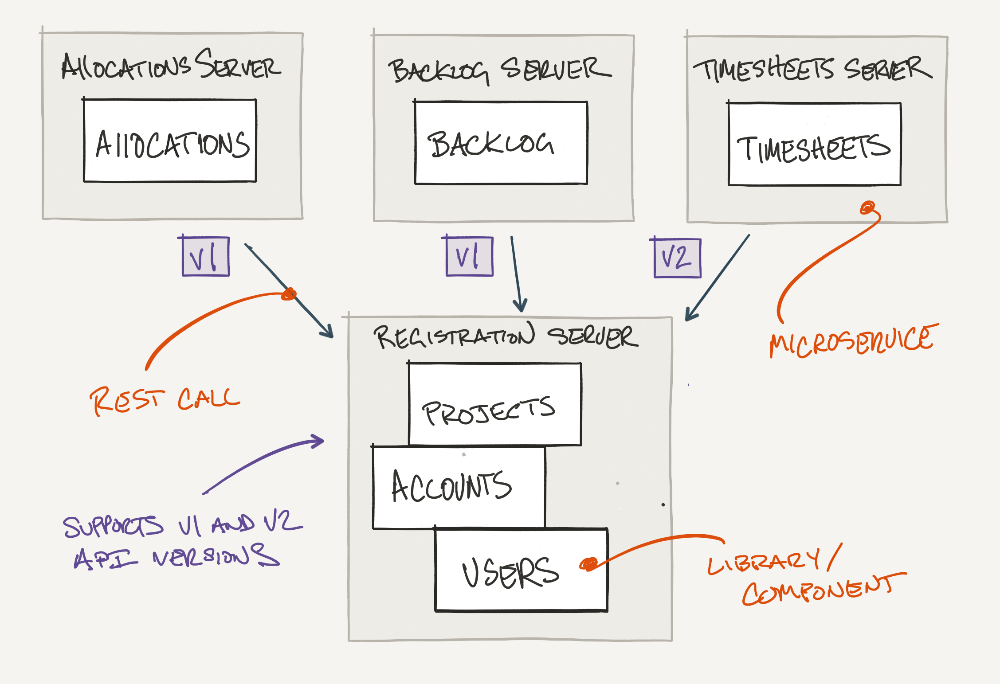

This website and codebase will make you a better developer.
Introduction
I've been part of several discussions that argue for and against building applications with microservices. In response, I've introduced the below diagram and associated architecture to show the evolution of a distributed system starting from a single application and evolving into several applications and services. Starting with a single application is just as viable as starting with microservices, it simply depends on how much information you're given.
Projects could start anywhere on the continuum, typically driven by the amount of information a team has about an application or set of applications. The amount of information is often driven by product /market fit. The less you know about a given market, which is typically common for startups, the further left you'd start. The more you know about a given market, the further right. Large, enterprise business-to-business applications, for example, tend to experience low market risk but often face high execution risk. Hence the tendency for enterprises to start on the far right of the continuum.
Why is all this important?
The continuum is language agnostic and applies to any modern programming language. This architecture helps reduce the cost of changing code as customer needs evolve. It provides developers and product owners the ability to use, reuse, and replace components within a given codebase to both pivot existing products and easily create new ones.
Project Structure
The example codebase uses a few select dependencies to emphasise the continuum steps. Understanding the building blocks will help you understand your chosen framework. I've also selected Kotlin as my programming language.
I've used a series of Git commit tags to illustrate each step.
$ git tag -ln
v1 First commit
v2 Functional groups
v3 Feature groups (Bounded content)
v4 Components
v5 Applications
v6 Services
v7 Versioning
v8 Databases
The example project is a software project management tool similar to Pivotal Tracker. Although not the actual codebase, Tracker followed a very similar evolution in application architecture. I've penciled in a few key epic features - Allocations, Backlog Management, and Time Tracking.
I've focused on the back-end development, but there's no reason you couldn't take a similar approach for the front end development. The project includes only a few dependencies and resides within a single Git repository.
Here's a helpful command when moving through the Git tags -
$ git checkout v1 && git clean -df
Single Application
First commit
The v1 tag starts with a flat directory structure. This step, while slightly naive, demonstrates a reasonable starting point having made no decisions around architecture. No groupings, no components, no services. Just a single, flat directory structure with class files.
Functional groups
v2 moves classes into Models, Controllers, Data Access Layer, and Utilities directories. I've noticed this directory structure over the years in many popular frameworks, although I've found that as your application evolves, a change to a small feature tends to drive changes through your entire codebase.
Would you ever put all your Integers in one file?
Functional groups become increasingly painful to maintain as teams grow and the complexity and size of the codebase increases. This is especially true when dependencies are not fully understood. I've found that this is typically the result of accidental design versus intentional design. For this reason, I've reverted the Functional groups commit in favor of v3, Feature groups.
Naming, organizing, and reducing circular dependencies are the three most important things you’ll ever do as a programmer
Single Application with Namespaces
Feature groups (Bounded content)
The v3 commit moves classes into feature groups or bounded contexts. The benefits of bounded contexts are readability and a step toward isolated (loosely coupled, highly cohesive) components.
Why is readability important?
Imagine you've just joined the team and pulled the next story from the top of the backlog, Update Timesheets. With functional groups, you would have to scan the entire codebase for timesheet related file changes. As the size of your codebase increases, the potential to overlook associated files that also need updating increases. Again, this is especially true as codebases increase in both size and complexity. Using feature groups or bounded contexts, all the timesheet related files are in one place with any complexity confined to a single directory.
The step toward single responsibility directories, while small, positions the codebase for v4, individual components with bounded contexts.
Design decision I've avoided the use of a "common" or "util" directory in favor of, in this case, jdbc-support and rest-support directories. Common or Util tells me absolutely nothing about the containing classes other than they may be shared by every class in the codebase. Avoiding common, util or similar "generic" directories will allow you to evolve your codebase on a moment's notice.
Design decision Database tests re-query the table data after data creation to ensure that records are actually persisted in the database.
Design decision Test package names are different than source package names. This is to ensure the intended level of encapsulation and reveal accidental design choices. It should be extremely painful for people to test package / private methods.
Single Application and Components
Components
In the v4 commit I've extracted the Users, Accounts, and Projects components. I've also extracted components for rest-support and jdbc-support, making a conscious effort to avoid creating a "common" package.
The main characteristic of the v4 commit is that each component is individually built and tested. This is similar to feature groups (loosely coupled and highly cohesive). Dependencies are clearly described within the build file and circular dependencies are resolved. The v4 commit sets us up nicely to introduce Services.
I've created a single databases directory although this is slightly atypical. Data definition language within each component is more common, permitting a per component data store.
Design decision I've chosen to create a Jdbc Template over an Object Relational Mapping library. This is because the bidirectional nature of JPA or similar libraries can lead to the accidental introduction of circular dependencies which make it painful to evolve a codebase. Database tables are not necessarily Objects and you shouldn't think about them as such.
Multiple Applications and Components
Applications
The v5 commit introduces 4 distinct applications - Allocations, Backlog, Registration, and Timesheets.
The Registration Application includes a simple REST API to access Account, Project, and User information. The service itself is very minimal, leaving domain logic within components. The Allocations, Backlog, and Timesheets Applications include a REST API, domain logic, and persistence layer. An alternate structure might have been to create components for each feature group similar to the Registration Application.
Single Repository
You'll notice that I've maintained a single Git repo. The single repo significantly reduces the overhead and complexity of API (in-process) versioning while enabling cross-component refactorings. The assumption is that Applications are stateless, well-tested, and able to be deployed with the larger suite of Components and Applications regardless of any local changes. They are also only consumed by the single "large" system. I understand that this topic is slightly controversial although, I highly encourage you to explore having a single repository.
The transition from step v5 to v6 shouldn't be taken lightly. The move to microservices is more than just an implementation detail and requires real and continued attention. Service availability (retry) and versioning (especially deploying "breaking changes") are just a few of the topics that become top of mind daily.
Design decision Components include both Record and Info classes. This is to ensure that an individual component's public API is decoupled from its internal database schema / implementation - i.e. you could change a component's underlying database technology or version an API without impacting existing clients.
Design decision You'll notice that Controller classes are located within each component. I've never found a strong reason to keep controllers or data access objects anywhere else other than local to the component - i.e. everything you need to know about a given bounded context is in one place. The design decision makes evolving the component to a microservice significantly less painful.
Multiple Applications, Components and Services
Services
The v6 commit demonstrates a microservices architecture - Allocations, Backlog and Timesheet applications are dependent on the Registration service via REST.
I've found that scaling both teams and performance are typically the main drivers for moving components to services for single systems; reuse, in this case, being another main driver. Reuse tends to be the main driver for moving components to their own repository.
Lastly, you'll find an integration or acceptance test that "flows" through the suite of services and a multi-service manifest file for deployment.
Design decision I've intentionally duplicated Info and Client classes in each of the Allocations, Backlog and Timesheets components. While your first instinct might be to create a common "project-client" or "domain" component, this duplication sets up for seamless versioning and moving components to separate Git repos as your team grows.
Design decision You'll notice that I did not include or commit any configuration or property files; user names, passwords, service location settings, etc. I've intentionally left this to the environment ensuring that the same artifact could truly be deployed to any environment; development, review, or production.
Versioning
Versioning services naturally follows your initial microservices deployment. I've introduced the v7 commit as a guide to service versioning. The Projects component, within the Registration service, has been upgraded to support a new feature in Timesheets - only projects that are "funded" should allow for timesheet submission. To support the new feature, you'll notice the duplication of Info and Controller classes within the Projects component.
The V2 API is used by the Timesheet service while our 2 other services, Backlog and Allocations, continue to use the V1 API.
Design decision I've used the Accept Header for my versioning strategy. There are lots of debates around how best to publish a new API version; URL, Accept Header, Custom Header. My recommendation is to simply choose the one that best meets your needs.
Databases
The v8 commit moves away from a single database to a database per microservice; Allocations, Backlog, Registration, and Timesheets. Implementing a per component data store becomes increasingly important as you evolve your application along the continuum to a distributed system. Service coupling has been completely removed. Services are now able to manage their own persistence strategy (choice of database technology), schema, and API versioning strategy independent of the other services.
Early Design Considerations
I tend to start all new projects with the 3 top level directories - applications, components, and databases. While following the continuum, I've found that the first few steps happen so quickly, weeks versus months, that it is easier to start every project with a component based directory structure.
For Kotlin or Java projects, I tend to use gradle and include gradlew - resulting in the below initial directory structure.
appcontinuum
├── applications
├── build.gradle
├── components
├── databases
├── gradle
├── gradlew
├── gradlew.bat
├── manifest.yml
├── README.md
└── settings.gradle
Summary
That's a wrap! Assuming you're on board with the continuum, I'm hopeful the project has given you insight in how an application evolves over time.
Applications may start anywhere on the continuum depending on how much information the team has at the start of the project; greenfield applications without product /market fit may start left while big existing product re-writes may start on the far right. Functional groupings could prove challenging when evolving along the continuum. Finally, it's also worth mentioning that not all applications need to evolve and could stop anywhere on the continuum.
Written by @barinek